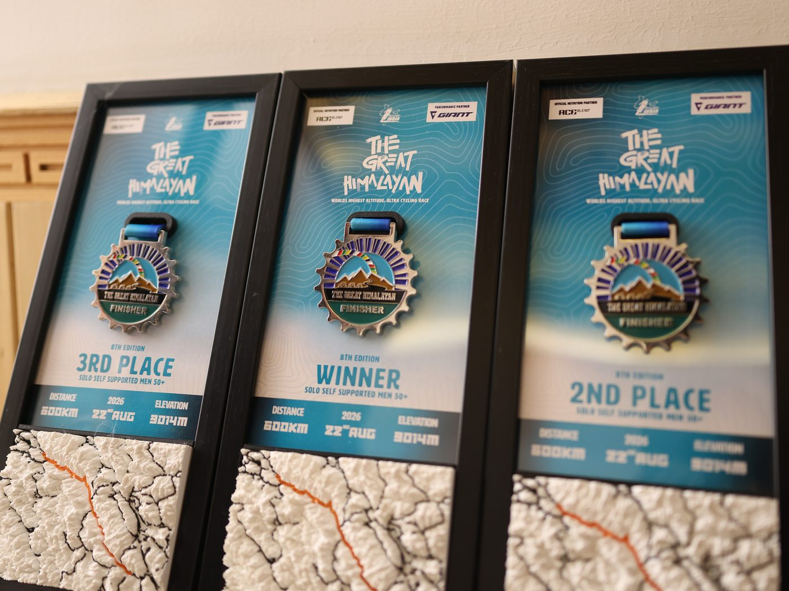

We turn the routes you earned into things you can hold.
The Artful Products is the product studio of The Artful Company, a creative agency in Pune. We design and 3D-print keepsakes made from the routes people ride, run and trek: the climb you suffered up, the loop you finally finished, the trail that changed you.

Why route keepsakes?
A finisher medal says you were there. Your route says what it took. Every ride, run and trek has a shape — the switchbacks, the long flat, the last hill before the finish — and we think that shape deserves more than a screenshot in an app.
So we rebuild it. We take the real terrain and your own GPS track, print it in layers, and finish each piece by hand: a magnet for the fridge, a keychain for every day, a rack for the medals, a frame for the one that mattered most.
How we work
- Your real route. Built from elevation data and your GPX or Strava link, not a generic mountain.
- Preview first. You see and approve a digital preview before anything is printed.
- Made in Pune. Designed, printed, finished and packed in our own studio.
- At the start line. You'll find us at race expos across India, taking orders and meeting finishers.
New collections are on the way.
Route keepsakes are where we started. We're designing more pieces across new categories, all made with the same care.
Get notified- Designed in-house
- 3D-printed in Pune
- Finished and checked by hand
- Made for people who earn their keepsakes